concrete targets
ESP32 module wiring and target-chip guides
Browse module and target-chip guides for CC1101, MCP2515 CAN, nRF24L01, W5500 Ethernet, SPI NOR flash, I2C/93Cxx EEPROM, SLE4442 smartcards, 1-Wire iButton and PN532 NFC/RFID. Each page connects ESP32 wiring, Bit Pirate protocols, recipes, supported boards and read-first reading and controlled writing.
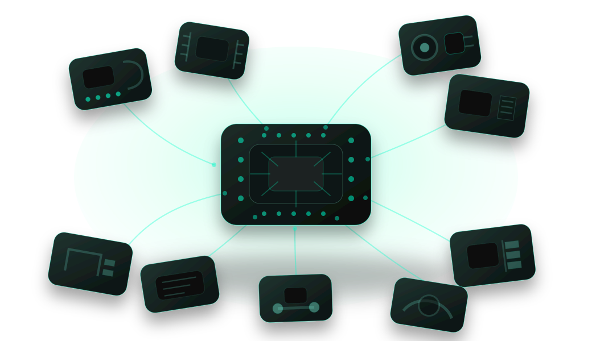
wireless modules
Radio and wireless modules
Radio module pages focus on concrete chips and connect each part to ESP32 Bit Pirate protocols, recipes and board choices.
CC1101 Sub-GHz module

Use a CC1101 Sub-GHz module with ESP32 Bit Pirate to scan activity, receive frames, record lab captures and connect RF workflows to recipes and supported boards.
- scan
- receive
- record
- Sub-GHz
nRF24L01 RF24 module
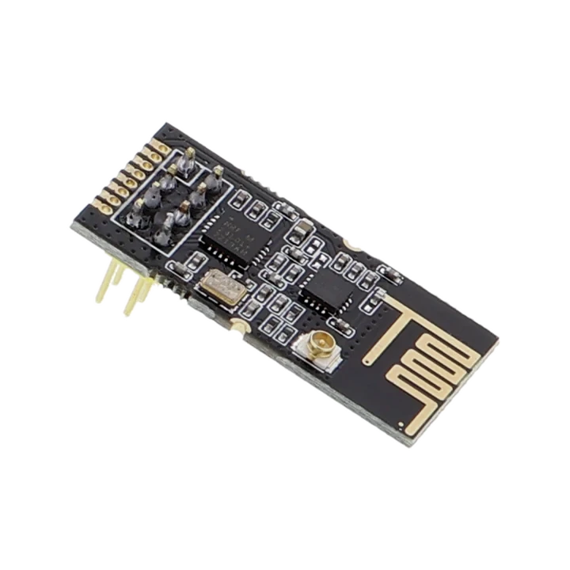
Use an nRF24L01 RF24 module with ESP32 Bit Pirate to configure radios, scan channels, send payloads and receive lab traffic.
- RF24
- scan
- send
- receive
Si4713 FM transmitter module
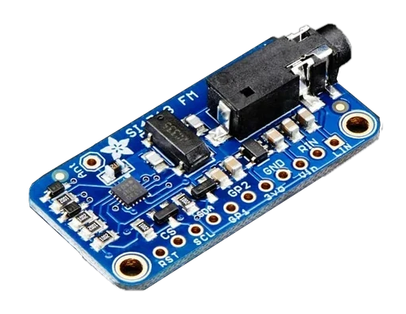
Use a Si4713 FM module with ESP32 Bit Pirate to wire FM/RDS hardware, scan bands and trace radio behavior during controlled lab experiments.
- FM
- RDS
- scan
- trace
field buses
Network and field-bus modules
These modules extend ESP32 Bit Pirate toward CAN, Ethernet and modem workflows where wiring, power and bus configuration matter as much as firmware commands.
MCP2515 CAN module
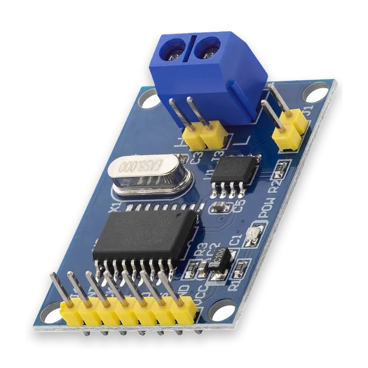
Use an MCP2515 CAN module with ESP32 Bit Pirate to wire CAN hardware, sniff frames, send controlled traffic and explore CAN workflows.
- CAN
- sniff
- send
- MCP2515
W5500 Ethernet module
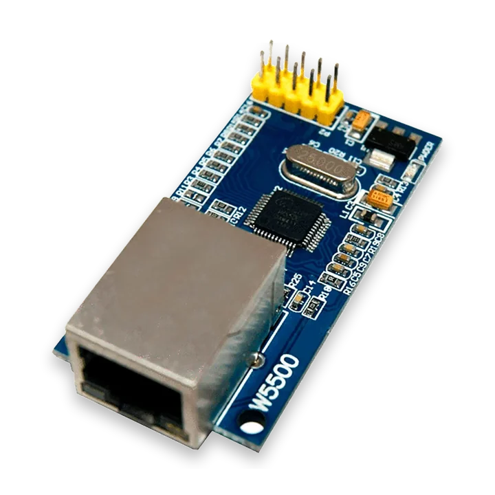
Use a W5500 Ethernet module with ESP32 Bit Pirate for DHCP, ping, HTTP, raw TCP, nmap and Modbus-oriented wired network workflows.
- Ethernet
- DHCP
- TCP
- Modbus
SIMCom cellular AT modem
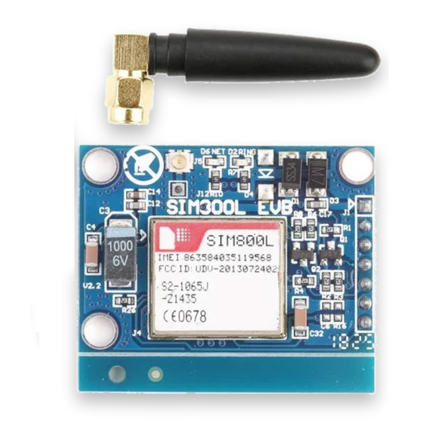
Use ESP32 Bit Pirate with SIMCom AT modems such as SIM800, SIM900, SIM7600 or A7670 to open a UART shell, check registration, read SIM data and test SMS or USSD commands.
- SIMCom
- AT
- UART
- SIM
reading and writing
Memory and firmware targets
Embedded memory reading and writing often begins with a chip on the bench: identify it, open the right shell, probe it safely, back it up and only then consider writes.
SPI NOR flash chip

Use ESP32 Bit Pirate with SPI NOR flash chips by opening the dedicated SPI flash shell for JEDEC probe, analysis, byte reads, dumps, search and controlled erase/write actions.
- flash shell
- JEDEC
- analyze
- SPI
I2C EEPROM chip
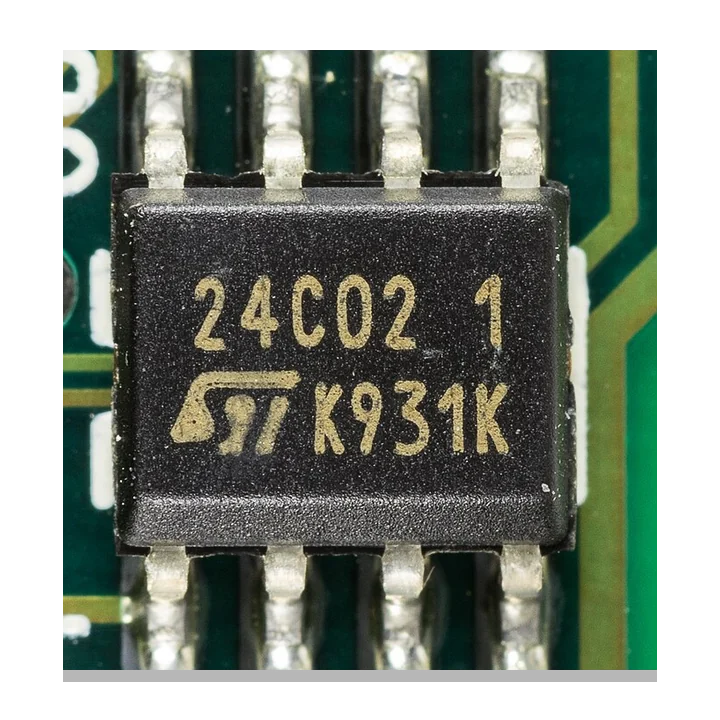
Use ESP32 Bit Pirate with I2C EEPROM chips by scanning the bus, then opening the dedicated EEPROM shell to probe size, analyze contents, read bytes, dump EEPROM and recover stuck bus states.
- I2C
- EEPROM shell
- probe
- recover
93Cxx Microwire EEPROM
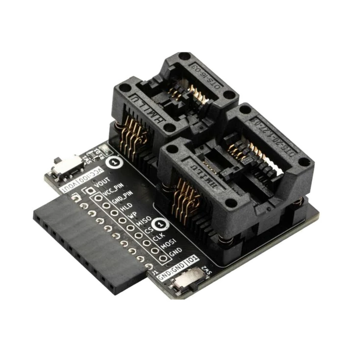
Use ESP32 Bit Pirate with 93Cxx Microwire EEPROM chips by opening the 3-Wire EEPROM shell to probe x8/x16 organization, read bytes, dump EEPROM and perform controlled writes or erases.
- 93Cxx
- 3-Wire shell
- probe
- backup
NFC and 1-Wire
Smartcards, iButton and NFC targets
These pages cover simple physical targets where pinout, protocol choice and safe test scope are the main source of mistakes.
SLE4442 smartcard
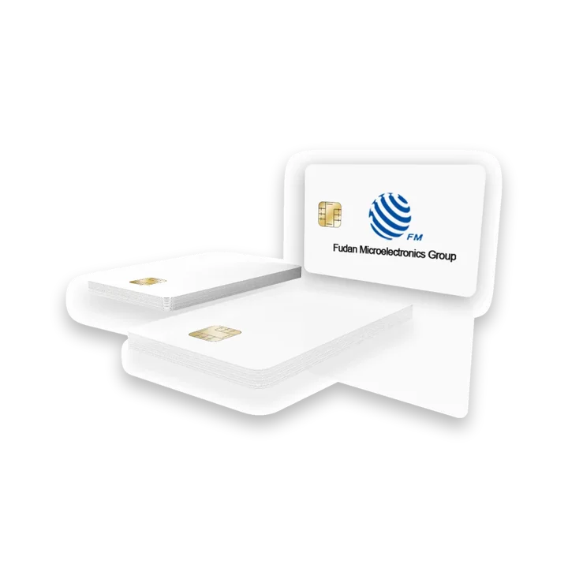
Use ESP32 Bit Pirate with SLE4442-style smartcards to probe ATR, read memory and check security status in controlled lab workflows.
- SLE4442
- smartcard
- ATR
- 2-Wire
1-Wire iButton
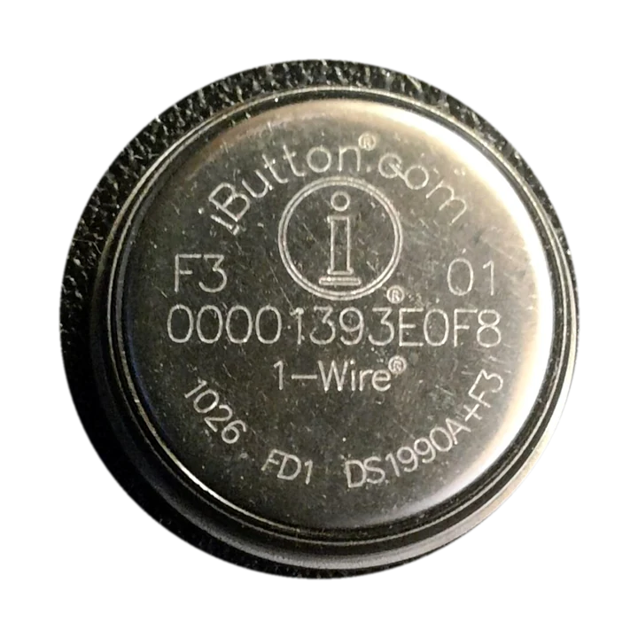
Use ESP32 Bit Pirate with 1-Wire iButton targets to read ROM IDs, verify presence pulses and debug Dallas key wiring in controlled lab workflows.
- 1-Wire
- iButton
- ROM ID
- read
PN532 NFC/RFID module
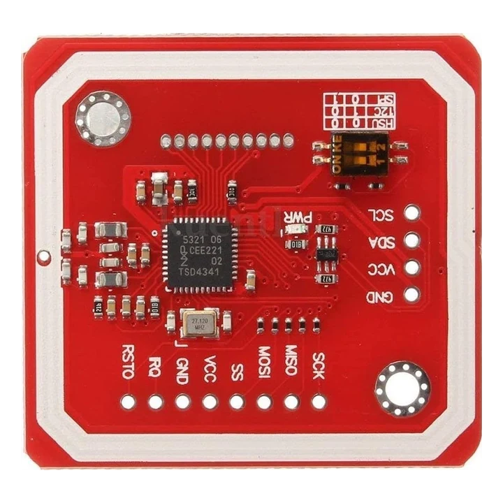
Use a PN532 NFC/RFID module with ESP32 Bit Pirate to wire I2C readers, read lab tags and test supported write workflows in controlled setups.
- PN532
- NFC
- RFID
- I2C
related guides
From target chip to Bit Pirate workflow
Modules describe the real target on the bench. Protocol pages explain the mode, board pages explain the ESP32-S3 host, recipes explain a concrete action, and web tools turn some workflows into browser-based tasks.
Find the bus or radio mode behind each module: SPI, I2C, CAN, RF24, Sub-GHz, Ethernet, 1-Wire and more.
Compatible boardsChoose the ESP32-S3 target that exposes the right pins, USB behavior and physical form factor.
Detailed recipesMove from a module overview to task-level wiring, scan, read, write, receive and troubleshooting guides.
Browser web toolsOpen Web Serial, SPI Flash Programmer, Logic Analyzer, BPIO2 and other tools from a compatible browser.